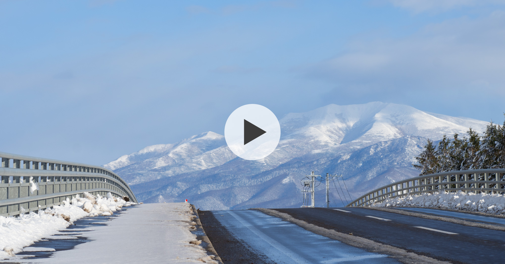
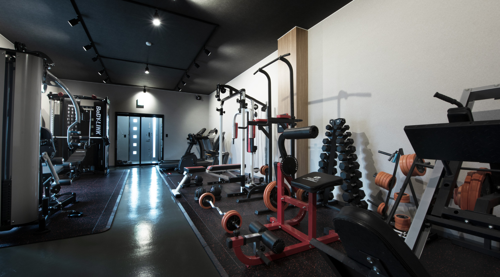
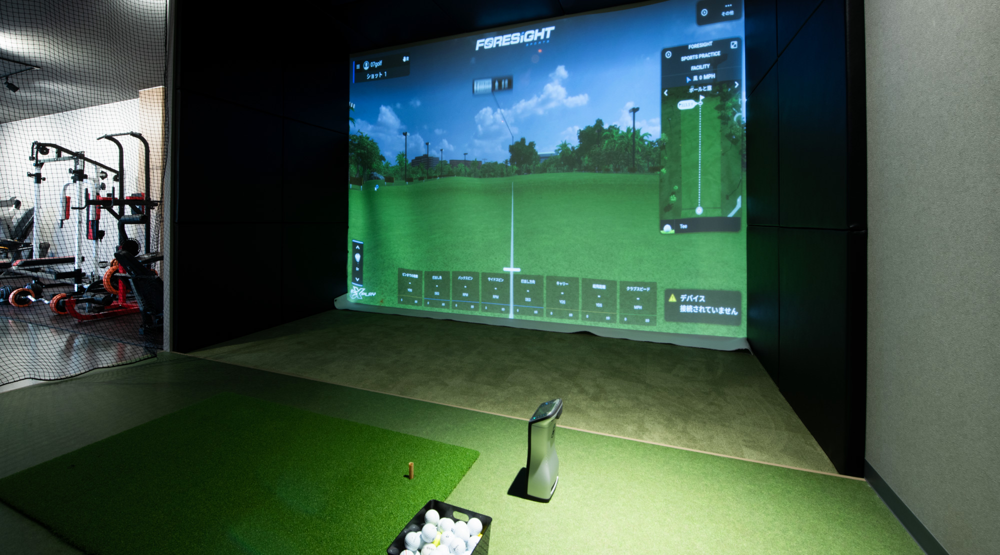
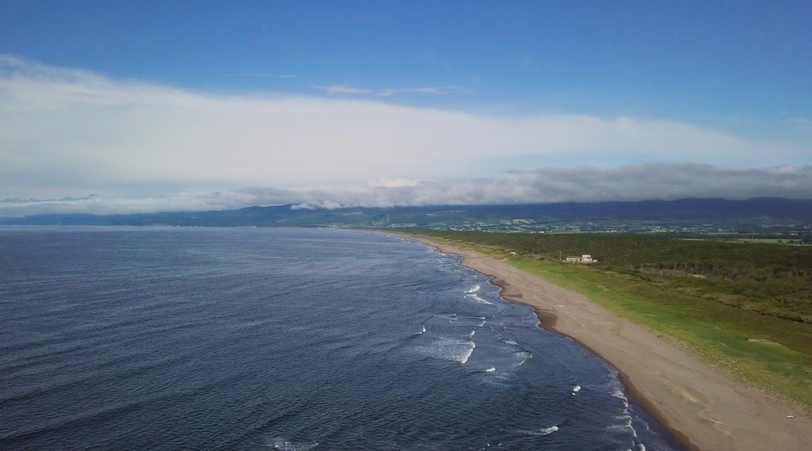
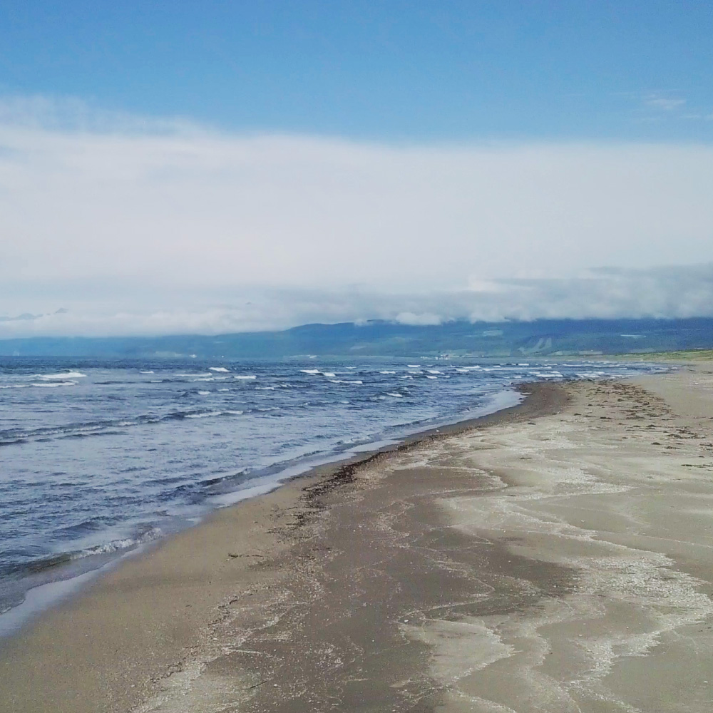

RECRUIT
採用情報世界自然遺産の知床で働こう
RECRUIT INFO
インターンシップ・説明会情報- NEWS2026.00.00新卒採用を対象とした募集を開始しました
- BLOG2026.00.00北見工業高校の生徒さんがインターンシップへ
- BLOG2026.00.00北海道斜里高等学校にて就職説明会を行いました
CORPORATE MOVIE
企業イメージムービー
丸七高橋組について
ゼネラルコントラクター
リフォーム会社 等
下請け企業をたばねる
ゼネラルコントラクター
多くの下請け業者を束ね、設計から施工までプロジェクト全体を
管理する役割を担う丸七高橋組。現場で汗を流すのではなく、
工程・品質・安全の管理で現場を動かし、地域の建設を支えます。
募集職種
現場管理・施工管理スタッフ
工事の工程や安全性を管理するのが主な仕事です。
研修が充実しておりますので、建設系の知識がなくても大丈夫です。
仕事も、暮らしも、知床で広がる。
地域をつくる仕事をしながら、自然に近い暮らしを楽しむ。
丸七高橋組には、仲間とリフレッシュできる設備や、
休日を豊かにする環境があります。
働く場所が変わると、毎日の楽しみ方も変わります。

仕事終わりにも、自然と人が集まる
敷地内には、トレーニングジムやゴルフシミュレーターを完備。
仕事終わりに身体を動かしたり、自然と会話が生まれたり。
それぞれのスタイルでリフレッシュできる場所があります。

知床の自然が、日々を豊かにする。
少し足をのばせば、海も山も、雄大な景色も。
季節ごとに表情を変える知床の自然を身近に感じながら、
散策をしたり、景色を眺めたり、ゆっくり深呼吸したり。
休日を自分らしく、ゆったり過ごせる環境です。

釣りも、カヤックも、
休日の選択肢になる。
サケ・マス釣りやシーカヤック、景色を楽しむドライブ。自然体験が身近にあるから、休日の過ごし方が自然と広がります。働く場所を選ぶことが、暮らしの楽しみを増やすきっかけになります。
寒い季節にも、
楽しみが待っている。
流氷が広がる冬には、流氷ウォークやウィンタースポーツなど、ここだからこそ体験できる休日の過ごし方があります。冬の厳しさも、自分らしい楽しみが見つかります。

新しい暮らしを、
住まいの面から支える。
遠方から働きに来る人にとって、住まい探しは大きな不安のひとつ。丸七高橋組では住宅提供のある募集もあり、仕事だけでなく、新しい暮らしのスタートも支えています。
先輩の声
安心して挑戦できる環境で
成長し、現場を支える力へ
私は入社後、維持管理の仕事からキャリアをスタートしました。先輩方が丁寧にサポートしてくださり、一つひとつ学びながら成長することができました。
現在は、既設の法枠を撤去し、新たに法面を補強する工事を担当しています。現場での経験を通じて、専門的な知識や技術を身につけながら、日々やりがいを感じています。
また、若手社員も多く、年齢の近い仲間と気軽にコミュニケーションが取れる点も魅力です。分からないことがあってもすぐに相談できる風通しの良い環境で、安心して働くことができます。
| 1年目18歳 | 入社 | 現場代理人の補佐 |
| 5年目23歳 | 2級建設機械 合格 | ↓ |
| 6年目24歳 | 道農政部 JV構成員 主任技術者 | |
| 7年目25歳 | 2級土木施工 合格 | 開発局 現場技術員 |
| 8年目26歳 | 1級土木施工技士補 （学科のみ） | 斜里町 現場代理人 |
| 9年目27歳 | 道建設部 JV構成員 主任技術者 | |
| 10年目28歳 | 道建設部 現場代理人 | |
| 11年目29歳 | 現在 | ↓ |
主な採用実績校
| 大学・大学院 | 同志社大学、日本大学、千葉工業大学、名城大学、 北海道科学大学、東北工業大学 |
|---|---|
| 短大・専門学校 | 道都短期大学、北海道測量専門学校、北海道立旭川高等技術専門学院 |
| 高校 | 斜里高等学校、清里高等学校、網走南ヶ丘高等学校、網走桂陽高等学校、 北見柏陽高等学校、札幌日本大学高等学校、札幌工業高等学校 |